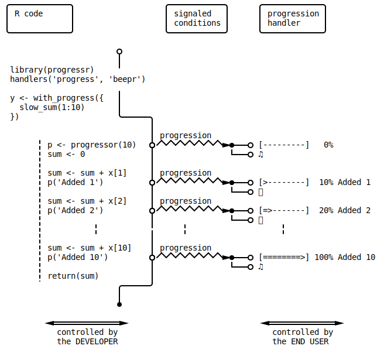

The progressr package provides a minimal API for reporting progress updates in R. The design is to separate the representation of progress updates from how they are presented. What type of progress to signal is controlled by the developer. How these progress updates are rendered is controlled by the end user. For instance, some users may prefer visual feedback such as a horizontal progress bar in the terminal, whereas others may prefer auditory feedback.

Design motto:
The developer is responsible for providing progress updates but it's only the end user who decides if, when, and how progress should be presented. No exceptions will be allowed.
| Developer's API | End-user's API |
|---|---|
p <- progressor(n) |
with_progress(expr) |
p <- progressor(along = x) |
handlers(...) |
p(msg, ...) |
Assume that we have a function slow_sum() for adding up the values in a vector. It is so slow, that we like to provide progress updates to whoever might be interested in it. With the progressr package, this can be done as:
slow_sum <- function(x) {
p <- progressr::progressor(along = x)
sum <- 0
for (kk in seq_along(x)) {
Sys.sleep(0.1)
sum <- sum + x[kk]
p(message = sprintf("Added %g", x[kk]))
}
sum
}
Note how there are no arguments in the code that specifies how progress is presented. The only task for the developer is to decide on where in the code it makes sense to signal that progress has been made. As we will see next, it is up to the end user of this code to decide whether they want to receive progress updates or not, and, if so, in what format.
When calling this function as in:
> y <- slow_sum(1:10)
> y
[1] 55
>
it will behave as any function and there will be no progress updates displayed.
To get progress updates, we can call it as:
> library(progressr)
> with_progress(y <- slow_sum(1:10))
|===================== | 40%
The default is to present progress via utils::txtProgressBar(), which is available on all R installations. To change the default, to, say, progress_bar() by the progress package, set:
handlers("progress")
This progress handler will present itself as:
> with_progress(y <- slow_sum(1:10))
[==================>---------------------------] 40% Added 4
To set the default progress handler(s) in all your R sessions, call progressr::handlers(...) in your ~/.Rprofile file.
Note all progress updates have to be presented visually. This can equally well be done auditory. For example, using:
handlers("beepr")
will present itself as sounds played at the beginning, while progressing, and at the end (using different beepr sounds). There will be no output written to the terminal;
> with_progress(y <- slow_sum(1:10))
> y
[1] 55
>
It is possible to have multiple progress handlers presenting progress updates at the same time. For example, to get both visual and auditory updates, use:
handlers("txtprogressbar", "beepr")
Note that progression updates by progressr is designed to work out of the box for any sequential iterator framework in R. Below is an set of examples for the most common ones.
library(progressr)
xs <- 1:5
with_progress({
p <- progressor(along = xs)
y <- lapply(xs, function(x) {
p(sprintf("x=%g", x))
Sys.sleep(0.1)
sqrt(x)
})
})
# |===================== | 40%
library(foreach)
library(progressr)
xs <- 1:5
with_progress({
p <- progressor(along = xs)
y <- foreach(x = xs) %do% {
p(sprintf("x=%g", x))
Sys.sleep(0.1)
sqrt(x)
}
})
# |===================== | 40%
library(purrr)
library(progressr)
xs <- 1:5
with_progress({
p <- progressor(along = xs)
y <- map(xs, function(x) {
p(sprintf("x=%g", x))
Sys.sleep(0.1)
sqrt(x)
})
})
# |===================== | 40%
The functions in the plyr package take argument .progress, which can be used to produce progress updates. To have them generate progressr 'progression' updates, use .progress = "progressr". For example,
library(plyr)
library(progressr)
xs <- 1:5
with_progress({
y <- llply(xs, function(x, ...) {
Sys.sleep(0.1)
sqrt(x)
}, .progress = "progressr")
})
# |===================== | 40%
The future framework, which provides a unified API for parallel and distributed processing in R, has built-in support for the kind of progression updates produced by the progressr package. This means that you can use it with for instance future.apply, furrr, and foreach with doFuture.
Here is an example that uses future_lapply() of the future.apply package to parallelize on the local machine while at the same time signaling progression updates:
library(future.apply)
plan(multisession)
library(progressr)
handlers("progress", "beepr")
xs <- 1:5
with_progress({
p <- progressor(along = xs)
y <- future_lapply(xs, function(x, ...) {
p(sprintf("x=%g", x))
Sys.sleep(6.0-x)
sqrt(x)
})
})
## [=================>-----------------------------] 40% x=2
Here is an example that uses foreach() of the foreach package to parallelize on the local machine (via doFuture) while at the same time signaling progression updates:
library(doFuture)
registerDoFuture()
plan(multisession)
library(progressr)
handlers("progress", "beepr")
xs <- 1:5
with_progress({
p <- progressor(along = xs)
y <- foreach(x = xs) %dopar% {
p(sprintf("x=%g", x))
Sys.sleep(6.0-x)
sqrt(x)
}
})
## [=================>-----------------------------] 40% x=2
library(furrr)
plan(multisession)
library(progressr)
handlers("progress", "beepr")
xs <- 1:5
with_progress({
p <- progressor(along = xs)
y <- future_map(xs, function(x) {
p(sprintf("x=%g", x))
Sys.sleep(6.0-x)
sqrt(x)
})
})
## [=================>-----------------------------] 40% x=2
Unfortunately, when using .parallel = TRUE, the plyr package resets .progress to the default "none" internally regardless how we set .progress. This prevents progressr progression updates from being used with parallel plyr. If it was not for this forced reset, using doFuture::registerDoFuture() with .parallel = TRUE and .progress = "progressr" would indeed have reported on progress updates also when plyr runs in parallel. See https://github.com/HenrikBengtsson/progressr/issues/70 for a hack that works around this limitation.
Because this project is under active development, the progressr API is currently kept at a very minimum. This will allow for the framework and the API to evolve while minimizing the risk for breaking code that depends on it. The roadmap for developing the API is roughly:
Provide minimal API for producing progress updates, i.e. progressor() and with_progress()
Add support for nested progress updates
Add API to allow users and package developers to design additional progression handlers
For a more up-to-date view on what features might be added, see https://github.com/HenrikBengtsson/progressr/issues.
When using the progressr package, progression updates are communicated via R's condition framework, which provides methods for creating, signaling, capturing, muffling, and relaying conditions. Progression updates are of classes progression and immediateCondition(*). The below figure gives an example how progression conditions are created, signaled, and rendered.
(*) The immediateCondition class of conditions are relayed as soon as possible by the future framework, which means that progression updates produced in parallel workers are reported to the end user as soon as the main R session have received them.

Figure: Sequence diagram illustrating how signaled progression conditions are captured by with_progress() and relayed to the two progression handlers 'progress' (a progress bar in the terminal) and 'beepr' (auditory) that the end user has chosen.
To debug progress updates, use:
> handlers("debug")
> with_progress(y <- slow_sum(1:10))
[13:33:49.743] (0.000s => +0.002s) initiate: 0/10 (+0) '' {clear=TRUE, enabled=TRUE, status=}
[13:33:49.847] (0.104s => +0.001s) update: 1/10 (+1) 'Added 1' {clear=TRUE, enabled=TRUE, status=}
[13:33:49.950] (0.206s => +0.001s) update: 2/10 (+1) 'Added 2' {clear=TRUE, enabled=TRUE, status=}
[13:33:50.052] (0.309s => +0.000s) update: 3/10 (+1) 'Added 3' {clear=TRUE, enabled=TRUE, status=}
[13:33:50.154] (0.411s => +0.001s) update: 4/10 (+1) 'Added 4' {clear=TRUE, enabled=TRUE, status=}
[13:33:50.257] (0.514s => +0.001s) update: 5/10 (+1) 'Added 5' {clear=TRUE, enabled=TRUE, status=}
[13:33:50.361] (0.618s => +0.002s) update: 6/10 (+1) 'Added 6' {clear=TRUE, enabled=TRUE, status=}
[13:33:50.464] (0.721s => +0.001s) update: 7/10 (+1) 'Added 7' {clear=TRUE, enabled=TRUE, status=}
[13:33:50.567] (0.824s => +0.001s) update: 8/10 (+1) 'Added 8' {clear=TRUE, enabled=TRUE, status=}
[13:33:50.670] (0.927s => +0.001s) update: 9/10 (+1) 'Added 9' {clear=TRUE, enabled=TRUE, status=}
[13:33:50.773] (1.030s => +0.001s) update: 10/10 (+1) 'Added 10' {clear=TRUE, enabled=TRUE, status=}
[13:33:50.774] (1.031s => +0.003s) update: 10/10 (+0) 'Added 10' {clear=TRUE, enabled=TRUE, status=}
[13:33:50.776] (1.033s => +0.001s) shutdown: 10/10 (+0) '' {clear=TRUE, enabled=TRUE, status=ok}